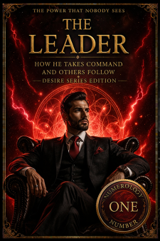
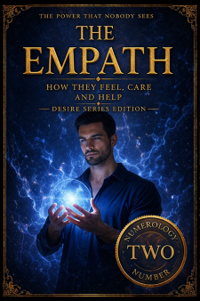
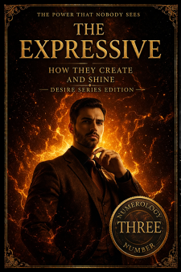
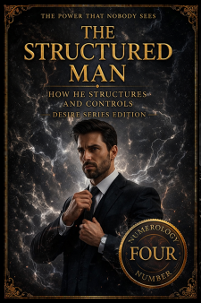
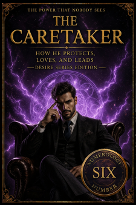
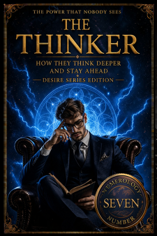
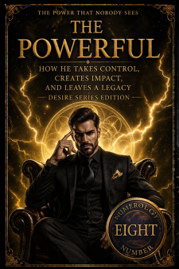
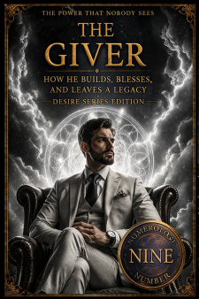

SEASON 1
SEASON 2
SEASON 3
SEASON 4
(choose a season)


Suzy Q & G Lab Research is not built around personalities. It is built around patterns. Behind this name stands a focused research approach dedicated to understanding one question: Why do people behave the way they do in relationships? Their work is based on the observation that human behavior follows recurring structures - patterns that can be recognized, understood, and predicted. At the core of this system lies a key principle: Numerical archetypes shape behavior. Drawing from the foundation of numerology, this approach identifies nine distinct patterns - each representing a different way a man thinks, feels, and acts. These are not random categories. They are structured behavioral types, each aligned with a specific numerical pattern. This system is presented through the 9 Types of Men, where each number represents: - a different mindset - a different emotional response - a different way of relating in relationships The purpose of this work is simple: - to make behavior understandable - to reveal hidden patterns - to replace confusion with clarity This is not guesswork. This is a system. Understand the number - understand the man. Suzy Q & G Lab Research







